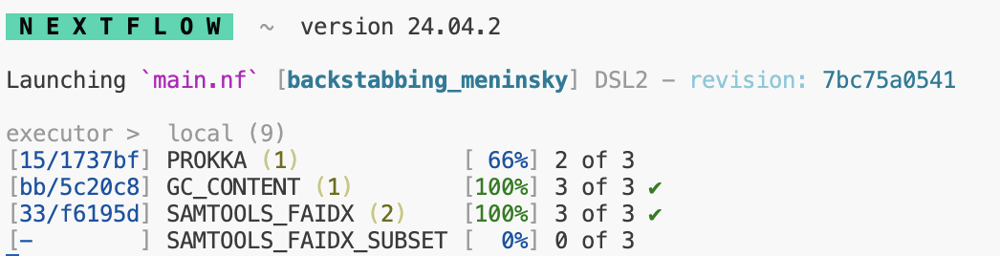

Week 3: Genome Analytics
Section Links
Understanding the staging directory
Passing outputs of processes as inputs
Basic Local Alignment Search Tool
Developing external scripts for workflows
Week 3 Overview
For this week, you will be inspecting the outputs of Prokka, and using the annotations generated to extract a specific portion of the genome sequence using samtools. You will also incorporate a simple python script into your Nextflow pipeline that will calculate a few basic statistics on your chosen genome (GC content and length). Finally, you will perform some basic analyses on your genome using kmer and BLAST.
Objectives
Get familiar with the outputs of Prokka and the GFF file
Use samtools to extract a randomly selected region from a large sequence
Incorporate external scripts seamlessly into your workflow
Use jellyfish to count kmers and understand how nextflow operators allow you to manipulate and join nextflow channels together
Understanding the staging directory
As we’ve mentioned, nextflow will “stage” files for specific processes in their
own directories that are named specially in the work/ directory it creates.
Nextflow processes will be run in these “staged” directories, which are isolated
from each other and contain only the files specified in the inputs.
These directories are named with a set pattern beginning with two letters or numbers, followed by an underscore, and then followed by a string of letters and numbers.This is known as a hash and you can think of it as a way of encoding data and information of arbitrary size to a fixed size. Nextflow will automatically stage each task in these separate directories for you. The main advantage of this strategy is that it prevents you from having to worry about file names and file name collisions since each task is guaranteed to run in its own new directory.
Remember that these directories are self-contained and nextflow will copy the
files in the input as well as bin/ to this new directory where your task will
execute. You should avoid trying to manually specify paths and instead include
any additional files you need in the input where nextflow will stage it
automatically for you.
When you run nextflow, you may have noticed that to the left of each process listed, you can see the location of where nextflow has run said task.

You can navigate to these directories manually to inspect logs, output files,
or check that the right files are being staged. By default, unless you specify
using publishDir, all of the results will be kept in this work/ directory.
Inspecting the Prokka Output
For full details, you can view the Prokka documentation for the exact files it produces. We are going to focus on the GFF output as that will contain some of the most important annotation information.
As we discussed in lecture, a GFF file contains information used to describe genes and other features of DNA, RNA or protein sequences.
-
Look in the
bin/directory at the python code in theextract_region.pyscript. This rough code will extract a region from the GFF you produced and output the coordinates in the format below.<name_of_genome>:<value from column 4>-<value from column 5>Or for a specific example:
genomeA:100-200 You have already been provided an outline for the code as well as the nextflow module that will call this script (
modules/extract_region/main.nf). Call this process in your workflow (main.nf) and pass it the outputs from Prokka. To access the named outputs of a channel, you can use<NAME OF PROCESS>.out.<EMIT NAME>or for our situation,PROKKA.out.gff.
Passing outputs of processes as inputs
In nearly all bioinformatics pipelines, you will need to take the outputs from one tool and input them into another. Last week, you generated a module and process to create a genome index for your chosen genome.
For most index files in bioinformatics, they will be named the same as the file they are associated with but with an additional extension indicating that it’s an index. For our example, we will have two files including the original FASTA file:
genome.fna
genome.fna.faiMost utilities that use this index file will by default assume that the index
and the original file are located in the same place. Our new process will call
mostly the same samtools faidx command, but now by including the index, it
will extract out the sequence associated with the coordinates provided in our
region_of_interest.txt (the output from the extract regions script and process)
In order to use this index to enable us to quickly access random regions of the genome and extract their sequence, we need the outputs from two separate processes: 1. The genome fasta and index generated by the samtools_faidx process and 2. The .txt file containing our region of interest generated by our extract_regions process.
- The reason we have been passing the name metadata in our channels is that there are often situations where we need to combine the outputs from multiple processes into one channel before performing another operation. In this case, we want to combine the outputs from samtools_faidx [name, path/to/genome.fna, path/to.genome.fna.fai] with the outputs of extract_region [name, path/to/region_of_interest.txt].
Look for an appropriate nextflow operator that will enable you to create a single channel from two channels based on a common key (name). The resulting channel should look something like:
[name, path/to/genome.fna, path/to/genome.fna.fai, path/to/region_of_interest.txt]When you have successfully done this, save this channel to a new variable called
subset_ch.
Generate a new
main.nfscript in thesamtools_faidx_subsetdirectory undermodules. You may copy yourmain.nffrom thesamtools_faidxdirectory as the inputs, outputs, and commands will all be largely similar. Modify the inputs to match the cardinality and order of yoursubset_ch. Use the>function to save the outputs of this process to a file calledregion.subset.fnaCall your samtools_faidx_subset process on the
subset_chby modifying your workflow in themain.nf.
Basic Local Alignment Search Tool
For those not familiar, BLAST is an algorithm developed by the NCBI that enables searching for short sequence matches of a query sequence against a large library of known and identified sequences present in our collective databases. It is a remarkable tool that will take a short nucleotide or protein sequence and return some of the most similar sequences, which allows us to make strong inferences and conclusions about the potential identity and origin of our sequence of interest. It is a heuristic algorithm that works by first finding short matches between two sequences. By its nature, it is not designed to find or ensure it returns optimal alignments, and instead prioritizes speed. A quick google search will lead you to the BLAST website.
Please select the nucleotide blast option and open the file you created from the samtools_faidx_subset process:
region.subset.fna. This file will be found in yourresults/directory. Copy the sequence found within that file into the query section of BLAST and leave all other options at default.Please take a screenshot of the BLAST results returned from your query. Make sure to briefly address the following questions in the provided ipynb. What are some of the possible alignments of your sequence of interest? Are there are any commonalities in the organisms found if you see multiple equally valid results?
If you wish, you can select more annotated regions from your genome use BLAST to attempt to identify your genome.
Genome kmer analysis
As we talked about in lecture, kmers are a useful tool for various flavors of genome analysis. Kmers allow for fast and efficient analysis of sequence data due to their relative computational simplicity. The kmer content of a genome measures the complexity of the genome (amongst other things) and the distribution of kmers may serve as a unique signature of individual genomes.
While counting kmers can be accomplished with just a few lines of python code, more advanced data structures and algorithms are necessary to make the analysis of larger genomes, and more deeply sequenced datasets more computationally tractable.
We will be using Jellyfish to efficiently count the unique and distinct kmers over a range of different values of k for all our microbial genomes.
Create a YML file that specifies a conda environment with the latest version of jellyfish. N.B. Ensure that you specify the package
kmer-jellyfishas there exists an entirely unrelated package namedjellyfish.In your workflow
main.nf, look in the channel factories reference to find a channel factory that creates a channel that contains a range of numbers from 1 to 21.Also in the
main.nf, find an appropriate nextflow operator and create a channel containing the pairwise combinations of your genome files and the numbered range above. See below for a fake example of what this channel would look like for one genome and a range of 1 to 3:
[genome1, /path/to/fa, 1]
[genome1, /path/to/fa, 2]
[genome1, /path/to/fa, 3]
- Create a module that will run jellyfish and perform two operations,
jellyfish countandjellyfish stats.jellyfish countwill count the total number of kmers for a given value of k for a specific file.jellyfish statswill access the file created fromjellyfish countand neatly summarize the kmers for a given size k into total, distinct and unique counts. Output the summarized stats into a new text file named with the following pattern:
<name_of_genome>_<value-of-k>mers.txt or genome1_6mers.txt
5.Use publishDir to copy these output files to your results/ directory.
- Incorporate this module into your workflow
main.nf
IMPORTANT As you can no doubt see from above, the channel we created will attempt to run as many jobs as the # of genomes by the number of elements in our range. For a single genome and the range 1 to 21, this would represent 21 separate jobs. As we talked about in lab, we will want to now take advantage of the ability to run jobs in parallel using the cluster. Your new command for running nextflow should now be:
nextflow run main.nf -profile cluster,condaThis command will allow nextflow to request that a # of these jobs be submitted to separate compute nodes to execute.
Hints:
Multi-line shell commands will execute one after another.
We can take advantage of the staging directory by simply making a file with the first
jellyfishcommand and then running the second command using that named file.Your
jellyfish countcommand will need to include the following arguments and appopriate values:-s 100M,-m,-o, and the input fasta file.
Developing external scripts for workflows
Many times in bioinformatics pipelines, we will need to run a custom script that will perform a specific analysis or operation. For this pipeline, we wish to calculate some basic statistics about the chosen genome. We will take advantage of the fact that FASTA files are simple text files with a defined format that can be easily parsed and the wealth of pre-built functions within the biopython library.
Nextflow has made the incorporation of scripts into workflows very simple. You
can place your external scripts in the bin/ directory and nextflow will handle
staging the bin/ directory and adding the script to path when it executes. You
will need to include a shebang
line and change the script
permissions to be executable prior to running your workflow.
You have already seen a small example of a script being incorporated into a nextflow workflow when you used the extract_regions.py and its associated module. Please refer back to this when developing this new script.
Take a look at the provided skeleton of a script in bin/ named
genome_stats.py. Examine lines 1-20, and you may also find this
documentation helpful. This
script utilizes argparse, a library meant to make it simple to write
user-friendly command-line interfaces. This is one of the many methods by which
tools and scripts enable you to set different flags or options at runtime (e.g.
–output or -p).
You will develop your code to parse the genome FASTA you were provided and the nextflow module accompanying this script will simply be responsible for passing it the correct input (your FASTA file) and specifying the output file.
Create an appropriate YML file to create a conda environment with the latest version of biopython installed.
-
Write valid python code below line 20 in the provided script. Use biopython to read in the FASTA file and return the GC content. You may refer to the biopython section on SeqIO for how to accomplish this. Your script should use biopython to do the following:
- Read in the FASTA file
- Parse the sequence correctly and return the GC Content as a percentage and the length of the genome.
- Output these two values to separate lines in a new file, you may include some text explaining what each value represents (i.e. GC Content: 64%)
Make a new directory in
modulesentitledgenome_statsand create amain.nfwithin that directory. The inputs for this module will be the same shape and structure as thefa_ch.
You will need to specify how you want the output file named. The shell/script
portion will be the command for executing the associated .py script and
providing it the appropriate inputs as specified by argparse. Please write the
new file to the results/ directory using publishDir. Name this output file
using the name value passed in the channel (i.e. ${name}_genome_stats.txt)
- When your script is functional and your associated nextflow module complete, run Nextflow once more to generate the text file containing the two genome statistics requested.
A fully operational nextflow pipeline
By this point, your nextflow pipeline should be working end-to-end. It should
read from the samplesheet.csv you created and drive a workflow that will index
the genome, extract a region, perform a simple kmer analysis, and calculate some
basic statistics describing that genome. The reason we have stressed making your
code generalizable, including avoiding using hardcoded paths or values, is so
that your workflow can operate on new samples by simply adding them to the CSV
and re-running nextflow. Nextflow’s caching strategy means that successfully run
jobs will not be re-run and it will figure out what new jobs need to be run
based on the changes.
Copy the two remaining genomes from /projectnb/bf528/materials/project-0-genome-analytics into your
refs/directory. Add their information to the samplesheet.csv as you did previously. Make sure to not include spaces in any values and instead use underscores to separate words.Re-run your nextflow workflow. It should perform the exact same tasks for these two new genomes simultaneously.
Week 3 Detailed Tasks Summary
Select a region of interest from the GFF generated from the output of Prokka and encode the information as specified in a new file
refs/region_of_interest.txtGenerate a new nextflow module that takes the outputs of the
samtools_faidxprocess as inputs along with yourrefs/region_of_interest.txt. This module should run samtools faidx to extract the specific sequence specified in your text file from the full genome file. Place this sequence in a new FASTA file calledregion.subset.fnaExplore the use of BLAST and utilize it to query the sequence you extracted. Take a screenshot of the results and make sure to answer the associated questions.
Create a module that runs
jellyfish countandjellyfish statsfor a range of k values (1 to 21). This output should create a single txt file containing the output fromjellyfishstats and named descriptively as described above.Develop the included
genome_stats.pyscript to successfully parse the genome FASTA file and calculate the GC content (as a percentage of total) and the length of the sequence using biopython. Simultaneously, develop a new nextflow module that will call the script and provide the appropriate inputs on the command line. This script should write the results to a new text file named as you choose.Copy the two genomes from our project directory you did not choose initially, and re-run your nextflow pipeline by first adding their information to the samplesheet.csv. Nextflow should automatically generate all of the same tasks and outputs for these two new genomes.